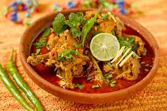

Desi Foods
Sindhi Biryani
Chicken Karahi
Mutton Karahi
Kata Kat
Nihari


per Kg
800,00/-
Description:
Biryani is a dish that was introduced by the Mughal Empire. It is believed that the wife of the emperor, Shah Jahan, first inspired this dish in the 16th century. The word ‘birian’ means ‘fried’ in Persian, further highlighting the Persian influence on Pakinstani food through the ages.

Full
1200,00/-
Description:
Chicken karahi is a delicious poultry dish, made from chicken, chili, spices, ginger, cardamom, tomatoes, ginger, and garlic. The word karahi refers to the deep cooking pot in which it is made.

Full
1400,00/-
Description:
The default meal on Eid, mutton karahi is traditonally seen as the big brother of chicken karahi. Mutton karahi is made from a rich mixture of lamb or mutton, with tomatoes, chilies, ginger, and garlic.

Full
1800,00/-
Description:
Originating from Karachi, kata kat gets its name from the sound the tava, a type of griddle, makes when different parts of meat are dissected and cooked on it
Full
2400,00/-
Description:
Nihari is a flavorful, juicy meat stew, made from beef shanks, mutton, and sometimes chicken. The meat is cooked together with stock and spices like garam masala, cardamom, ginger, garlic, and cloves, adding spice and depth to the flavor.
Back to menu